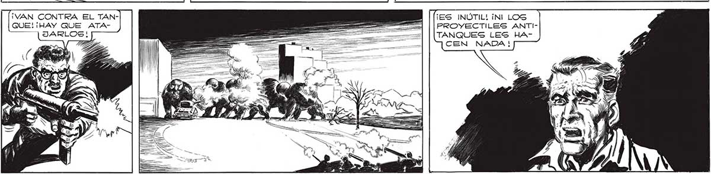
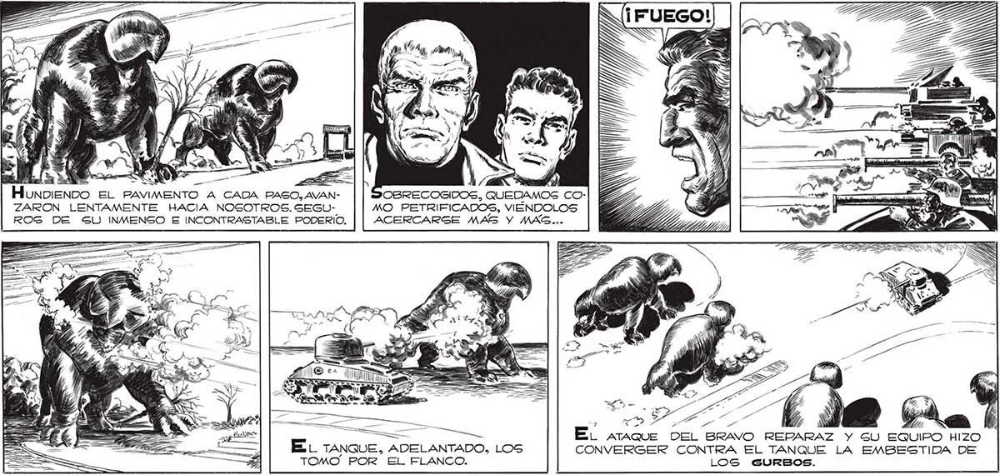

== > 4) Honoienvbo EL PAVIMENTO A CADA PASO, AVAN- OBRECOGIDOS, QUEDAMOS CO: ZARON LENTAMENTE HACIA NOSOTROS. SEGU- MO PETRIFICADOS, VIÉNDOLOS ROG DE SU INMENSO E INCONTRASTABLE PODERIO. ACERCARSE MAS Y MAS... ÑN E mn . ds > - a sy UY WN E la ho ES he QUE DEL BRAVO REPARAZ Y GU EQUIPO HIZO EL TANQUE, ADELANTADO, LOS CONVERGER CONTRA EL TANQUE LA EMBESTIDA DE TOMO POR EL FLANCO. LOS GURBOS. €=—— ¡VAN CONTRA EL TAN- E ¡ES INÚTIL! ¡NI LOS QUE! ¡HAY QUE ATA- == - —_ > PROYECTILES ANTI= = . TANQUES LES CEN NADA ! 211

